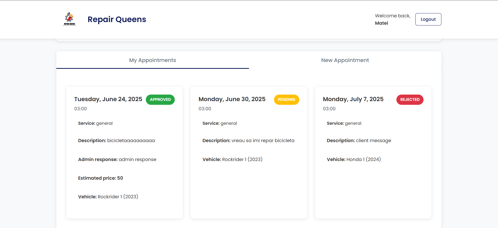
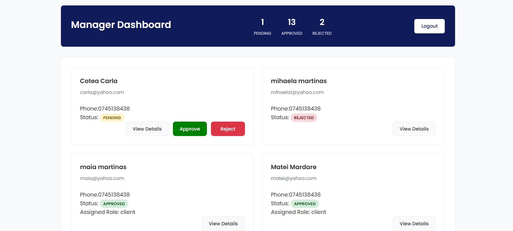
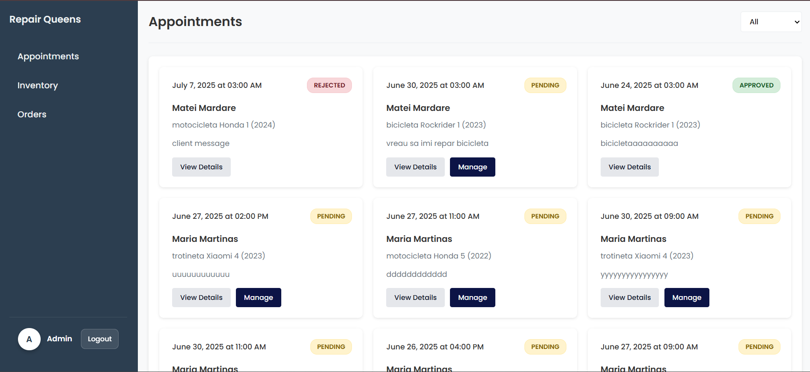

Maintenance Web Tool - Repair Queens
Autori
- Martinas Ioana Maria
- Sacarescu Rebecca Maria
1. Rezumat
Proiectul Maintenance Web Tool are ca scop dezvoltarea unui sistem online dedicat gestionării eficiente a programărilor și operațiunilor desfășurate în cadrul unui service pentru motociclete, biciclete și trotinete (electrice sau clasice). Platforma se adresează atât clienților, cât și personalului din service, oferind funcționalități personalizate în funcție de rolul atribuit fiecărui utilizator.
2. Introducere
2.1 Scop
Scopul aplicației noastre este de a le oferi utilizatorilor posibilitatea de a-și face programări online pentru servicii de reparație, mentenanță sau întreținere a trotinetelor, motocicletelor și bicicletelor într-un mod rapid, simplu și eficient. Aplicația elimină nevoia apelurilor telefonice sau a vizitelor fizice doar pentru a stabili o programare, permițând astfel economisirea timpului și îmbunătățirea experienței clientului. Prin intermediul platformei, utilizatorii pot selecta tipul de vehicul, serviciul dorit și ora preferată pentru programare. După efectuarea unei programări, aceștia pot urmări statusul cererii în cont, iar istoricul programărilor rămâne salvat. Pentru service, aplicația asigură o mai bună organizare a activității, oferind o planificare clară a programărilor, o evidență completă a clienților și a reparațiilor efectuate, precum și o administrare eficientă a resurselor.
2.2 Convențiile documentului
Fontul utilizat în acest document este sans-serif, cu dimensiunea 16px. În cazul în care dorim să evidențiem anumite elemente, vom folosi bold. Fiecare punct va fi detaliat în mai multe subpuncte, numerotate sau cu marcatori, în funcție de caz.
2.3 Publicul vizat și sugestii de lectură
Documentul este destinat următoarelor categorii de utilizatori:
- Dezvoltatori și testeri: Secțiunile relevante includ 3.1 Perspectiva produsului, 3.2 Funcțiile produsului, 4.3 Interfața software și 6. Cerințele nefuncționale. Acestea oferă informații despre arhitectura Node.js/PostgreSQL, funcționalitățile sistemului de programări și cerințele tehnice de securitate.
- Manageri de proiect: Secțiunile 2.1 Scop, 2.4 Domeniul de aplicare și 5. Caracteristicile sistemului sunt cele mai utile pentru înțelegerea obiectivelor proiectului și planificarea resurselor necesare implementării.
- Utilizatori finali (personal service): Pot consulta secțiunea 3.5 Documentația utilizatorului pentru a învăța cum să utilizeze interfețele specifice rolurilor (administrator, contabil, manager) și funcționalitățile de gestionare a programărilor.
- Clienți ai service-ului: Secțiunea 3.5 Documentația utilizatorului oferă informații despre procesul de programare online, consultarea calendarului și urmărirea statusului programărilor.
- Administratori de sistem: Secțiunile 3.4 Constrângeri de proiectare și implementare, 4.2 Interfața hardware și 6. Cerințele nefuncționale conțin specificații pentru deployment, securitate și performanță.
- Scriitori de documentație: Pot consulta 2.2 Convențiile documentului pentru a înțelege stilul, formatul și terminologia utilizată în documentația tehnică a proiectului.
2.4 Domeniul de aplicare al produsului
- Această aplicație web are ca scop digitalizarea procesului de programare și comunicare între clienți și service, oferind o experiență modernă și eficientă de planificare a lucrărilor de reparație sau întreținere.
- Clienții pot trimite o solicitare de programare, specificând data și ora dorită și detalii despre defecțiune.
- Administratorul service-ului poate accepta sau respinge programările. În cazul respingerii, poate adăuga un mesaj explicativ. Dacă solicitarea este acceptată, acesta poate furniza detalii utile, cum ar fi o estimare de preț, termen de execuție și o garanție.
- Aplicația permite administrarea stocurilor de piese disponibile în service, precum și gestionarea comenzilor trimise către furnizori. Astfel, se asigură o mai bună planificare a resurselor și evitarea întârzierilor în procesul de reparație.
- Sistemul suportă importul de date în formate CSV și JSON, precum și exportul în formatele CSV, JSON și PDF, a datelor despre furnizori, piese mecanice și programări.
- Aplicația este dezvoltată ca platformă web și este accesibilă atât de pe desktop, cât și de pe dispozitive mobile, asigurând flexibilitate.
3. Descriere generală
3.1 Perspectiva produsului
Perspectiva proiectului este de a dezvolta un sistem web modern și eficient pentru gestionarea programărilor și operațiunilor din cadrul unui service de motociclete, biciclete și trotinete (electrice sau clasice), oferind o platformă centralizată care conectează clienții cu personalul service-ului.
Următoarea diagramă prezintă componentele majore ale sistemului aplicației:
- Frontend - reprezintă partea vizibilă a aplicației pentru utilizator, care include interfața grafică de utilizator (User Interface), dezvoltată cu HTML, CSS și JavaScript. Oferă interfețe distincte pentru fiecare tip de utilizator: dashboard-uri pentru clienți, administratori, contabili și manageri.
- API REST - reprezintă partea de interacțiune între frontend și backend, oferind o interfață de programare a aplicației pentru accesul la date și servicii. API-ul implementează endpoint-uri dedicate pentru gestionarea programărilor (/api/appointments), vehiculelor (/api/vehicles), inventarului (/api/inventory) și furnizorilor (/api/suppliers).
- Backend - reprezintă partea de procesare și stocare a datelor din aplicație, implementată în Node.js vanilla. Include serviciile aplicației pentru autentificare JWT, gestionarea rolurilor utilizatorilor, procesarea programărilor, administrarea stocurilor și gestionarea comenzilor către furnizori.
- Database & Storage - reprezintă componenta de stocare a datelor utilizate de aplicație, implementată cu PostgreSQL pentru stocarea utilizatorilor, programărilor, vehiculelor, pieselor, furnizorilor și comenzilor.
- Module de Import/Export - componente specializate pentru procesarea și transferul datelor în formatele CSV și JSON (import) și CSV, JSON, PDF (export), facilitând integrarea cu sisteme externe și generarea rapoartelor.
3.2 Funcțiile produsului
Utilizatorul poate accesa paginile Statistics, News, Nominations și Register:

În cadrul acestora, ne vom folosi de două baze de date pentru preluarea datelor despre actori, filme și nominalizările lor (SAG Awards și TheMovieDB) și o bază de date pentru memorarea utilizatorilor:

3.3 Clasele și caracteristicile utilizatorilor
Aplicația este utilizată de mai multe categorii de utilizatori, fiecare având roluri și permisiuni specifice în cadrul platformei:
- Client – Poate crea un cont, adăuga vehicule personale (motociclete, trotinete sau biciclete – electrice sau nu) și poate realiza programări pentru acestea. Programările pot fi efectuate în intervalul luni-vineri, în limita a trei locuri disponibile pe fiecare interval disponibil. Clientul poate urmări statusul programării din contul lui. În cazul aprobării, va primi un mesaj cu detalii, un preț estimativ și o garanție a serviciului.
- Administrator – Are acces la toate cererile de programare, împreună cu detaliile vehiculului și problema raportată. Administratorul poate aproba o programare, caz în care trebuie să introducă un preț estimativ, o garanție și să asocieze piese mecanice necesare reparației. Alternativ, poate respinge o programare oferind un mesaj explicativ. De asemenea, are acces la gestiunea inventarului: poate vizualiza toate piesele, comanda altele noi și actualiza statusul comenzilor (In transit, Delivered, Cancelled).
- Contabil – Poate vizualiza și gestiona furnizorii cu care colaborează service-ul, având posibilitatea de a adăuga furnizori noi. Dispune de funcționalități de import și export de date în diverse formate (CSV, JSON pentru import; PDF, CSV, JSON pentru export). Poate importa/exporta informații legate de furnizori, piese mecanice și programări.
- Manager – Este responsabil de aprobarea conturilor de utilizatori noi. După aprobare, oferă fiecărui utilizator un rol specific (client, administrator, contabil) în funcție de scopul și atribuțiile acestuia în cadrul aplicației.
3.4 Constrângeri de proiectare și implementare
Constrângerile de proiectare și implementare pentru aplicația web de programare și gestionare a serviciilor de întreținere și reparații pentru trotinete, scutere și biciclete sunt următoarele:
- Limitări hardware și performanță: Serverul trebuie să asigure o capacitate suficientă pentru a gestiona conexiunile multiple simultane, mai ales în intervalele orare de vârf, și să ofere timpi de răspuns optimi.
- Interfețe și interoperabilitate: Aplicația trebuie să permită importul și exportul datelor în formatele CSV, JSON și PDF.
- Tehnologii și instrumente utilizate: Proiectul utilizează Node.js pentru backend, PostgreSQL pentru gestionarea bazei de date, iar frontend-ul este realizat cu HTML, CSS și JavaScript. Alegerea acestor tehnologii implică o structură modulară și orientată pe REST API.
- Securitate și protecția datelor: Aplicația implementează mai multe măsuri pentru a asigura securitatea datelor și a utilizatorilor:
- Prevenirea atacurilor de tip SQL Injection prin utilizarea de query-uri parametrizate în interacțiunea cu PostgreSQL.
- Protecție împotriva atacurilor de tip Cross-Site Scripting (XSS) prin validarea și igienizarea datelor introduse de utilizatori.
- Autentificare și autorizare bazate pe JSON Web Tokens (JWT), care permit gestionarea sigură a sesiunilor și a drepturilor pe baza rolurilor definite (client, administrator, contabil, manager).
- Parolele sunt criptate folosind algoritmi siguri înainte de a fi stocate în baza de date.
3.5 Documentația utilizatorului
La accesarea aplicației, utilizatorul este întâmpinat cu o pagină principală unde poate naviga spre autentificare sau înregistrare. Pentru a utiliza funcționalitățile aplicației, este necesar ca fiecare utilizator să își creeze un cont.
- Crearea contului: Utilizatorul accesează formularul de înregistrare, completează datele cerute, iar cererea este trimisă spre aprobare de către manager. După aprobarea contului și atribuirea unui rol, utilizatorul poate accesa funcționalitățile corespunzătoare.
- Clientul: După autentificare, clientul poate:
- Adăuga un nou vehicul (bicicletă, trotinetă, motocicletă – electrice sau nu);
- Vizualiza lista vehiculelor sale și alege unul pentru a crea o programare în zilele lucrătoare;
- Vizualiza statusul programării sale (în așteptare, aprobată sau respinsă);
- Dacă programarea este aprobată, clientul va putea vedea un mesaj din partea administratorului cu detalii despre reparație și prețul estimativ.
- Administratorul: După autentificare, administratorul poate:
- Vizualiza toate cererile de programare primite de la clienți, împreună cu detaliile fiecărei cereri;
- Aproba sau respinge programări. La aprobare, trebuie să introducă un preț estimativ, o garanție și piesele necesare reparației;
- Gestiona inventarul de piese mecanice, vizualizând stocurile curente și comandând piese noi;
- Actualiza statusul comenzilor de piese (In transit, Delivered, Cancelled).
- Contabilul: După autentificare, contabilul poate:
- Vizualiza lista furnizorilor actuali ai service-ului;
- Adăuga furnizori noi în sistem;
- Importa și exporta date în formatele CSV, JSON și PDF referitoare la furnizori, piese mecanice și programări.
- Managerul: După autentificare, managerul poate:
- Vizualiza toate cererile de creare de cont;
- Aproba sau respinge cererile și atribui rolul corespunzător fiecărui utilizator (client, admin, contabil).
4. Interfața aplicației
4.1 Interfața cu utilizatorul
Interacțiunile și interfața utilizatorului pentru proiectul Service Auto pentru gestionarea programărilor și serviciilor de mentenanță ar putea fi următoarele:
-
Client Dashboard
- Pagina principală pentru clienți afișează o imagine de ansamblu asupra programărilor active și istoricul serviciilor.
- Programări active: Clientul poate vizualiza programările viitoare cu detalii despre dată, oră, tipul serviciului și statusul current.
- Istoric servicii: Acces la istoricul complet al serviciilor efectuate, cu detalii despre costurile și reparațiile realizate.
- Programare nouă: Funcționalitate pentru crearea unei programări noi cu selecția vehiculului și descrierea problemei.
- Vehicule înregistrate: Gestionarea vehiculelor personale cu posibilitatea adăugării de vehicule noi.
 -
Manager Dashboard
- Interfață dedicată managerilor pentru gestionarea conturilor și distribuirea rolurilor în sistem.
- Gestionarea cererilor de cont: Vizualizarea și procesarea cererilor de înregistrare ale utilizatorilor noi.
- Aprobare/Respingere conturi: Acceptarea sau refuzarea cererilor de cont cu posibilitatea de a adăuga comentarii explicative.
- Distribuirea rolurilor: Atribuirea rolurilor specifice pentru utilizatorii acceptați (client, contabil, admin).
- Monitorizarea conturilor: Urmărirea statusului conturilor și istoricul deciziilor luate.
 -
Admin Dashboard
- Panoul de control pentru administratorii sistemului cu acces la gestionarea programărilor și inventarului.
- Gestionarea programărilor: Aprobare sau respingere programări cu stabilirea prețului estimativ și garantiei oferite.
- Estimări și prețuri: Setarea costurilor estimate pentru servicii și oferirea de garanții pentru lucrările efectuate.
- Gestionarea stocurilor: Vizualizarea inventarului disponibil de piese și componente pentru reparații.
- Comenzi de piese: Plasarea comenzilor pentru piese noi când stocul este insuficient sau lipsesc componente necesare.
- Actualizarea comenzilor: Monitorizarea și actualizarea statusului comenzilor de piese în timp real.

4.2 Interfața hardware
Următoarele tipuri de dispozitive vor fi acceptate de proiectul Maintenance Web Tool:
- Laptop-uri și desktop-uri
- Tablete și telefoane mobile
4.3 Interfața software
Interfețele software ale proiectului Maintenance Web Tool sunt:
- API-ul REST propriu dezvoltat: Implementat în Node.js vanilla pentru gestionarea cererilor HTTP și răspunsurilor JSON. Include endpoint-uri pentru programări (/api/appointments), vehicule (/api/vehicles) și inventar (/api/inventory), cu routing manual și parsarea request-urilor.
- Sistem de autentificare JWT: Va fi folosit pentru gestionarea sesiunilor utilizatorilor și controlul accesului bazat pe roluri (client, admin, manager, contabil). Interfața va include middleware-ul de autentificare și verificarea permisiunilor pentru fiecare endpoint.
- Interfața cu baza de date PostgreSQL: Aceasta va fi folosită pentru stocarea și gestionarea tuturor datelor aplicației: utilizatori, programări, vehicule, piese, furnizori și comenzi. Interfața va include conexiunea la baza de date, definirea schemelor și operații CRUD (Create, Read, Update, Delete) cu query-uri parametrizate pentru prevenirea SQL Injection.
- Module de import/export: Interfețe software pentru procesarea fișierelor în formatele CSV, JSON și PDF. Acestea vor permite importul precum si exportul datelor despre furnizori, piese si programări.
- Sistemul de validare și securitate: Implementat cu funcții personalizate pentru validarea input-urilor, sanitizarea datelor și prevenirea atacurilor XSS și SQL Injection, folosind doar expresii regulate și validări manuale.
4.4 Interfața de comunicații
Interfața de comunicare asociată proiectului Maintenance Web Tool include următoarele funcții de comunicare:
- Comunicare prin browsere web: Pentru accesarea interfețelor specifice fiecărui rol de utilizator (client dashboard, admin dashboard, manager dashboard) și interacțiunea cu funcționalitățile aplicației prin interfața web responsive.
- Comunicare prin API REST: Pentru schimbul de date între frontend și backend prin endpoint-uri dedicate pentru gestionarea programărilor, utilizatorilor, vehiculelor, inventarului și comenzilor. API-ul folosește metode HTTP standard (GET, POST, PUT, DELETE).
- Comunicare prin formulare web: Pentru colectarea și procesarea datelor de la utilizatori prin formulare de înregistrare, autentificare, creare programări, adăugare vehicule și gestionare inventar, cu validare în timp real.
- Comunicare cu baza de date: Pentru accesarea și manipularea datelor stocate în PostgreSQL prin conexiuni sigure, query-uri parametrizate și gestionarea tranzacțiilor pentru operațiuni complexe.
- Transfer de fișiere: Pentru funcționalitățile de import/export în formatele CSV, JSON și PDF, permitând schimbul de date cu sisteme externe și generarea rapoartelor.
5. Caracteristicile sistemului
Aplicația oferă următoarele funcționalități principale:
- Gestionarea conturilor de utilizatori, cu roluri distincte (client, administrator, contabil, manager);
- Autentificare securizată pe bază de JSON Web Tokens (JWT) și protecție împotriva SQL Injection și Cross-Site Scripting (XSS);
- Programarea intervențiilor pentru vehicule (în funcție de disponibilitatea pe sloturi orare, de luni până vineri);
- Administrarea programărilor și a pieselor necesare pentru reparații, inclusiv aprobare, estimare de preț și gestiune inventar;
- Importul și exportul datelor (furnizori, piese, programări) în formate CSV, JSON și PDF;
- Vizualizarea și gestionarea comenzilor de piese și a statusurilor („In transit”, „Delivered”, „Cancelled”).
6. Cerințe nefuncționale
Sistemul respectă următoarele cerințe nefuncționale:
- Securitate: Aplicația utilizează JSON Web Tokens (JWT) pentru autentificare și autorizare, prevenind accesul neautorizat. De asemenea, sunt implementate măsuri de protecție împotriva atacurilor de tip SQL Injection și Cross-Site Scripting (XSS).
- Performanță: Sistemul răspunde rapid la cererile utilizatorilor, având timpi de răspuns scăzuți datorită structurii eficiente a bazei de date PostgreSQL și a arhitecturii backend Node.js.
- Fiabilitate: Aplicația gestionează corect erorile la nivel de server și client, oferind mesaje informative.
- Interoperabilitate: Sistemul poate importa și exporta date în formate CSV, JSON și PDF.
- Usability: Interfața web este intuitivă, realizată cu HTML, CSS și JavaScript, și respectă principiile de design responsive pentru a putea fi accesată de pe orice dispozitiv.
- Scalabilitate: Arhitectura aplicației permite extinderea funcționalităților, adăugarea de noi roluri și manipularea unui număr mai mare de utilizatori și date, fără a compromite performanța generală.